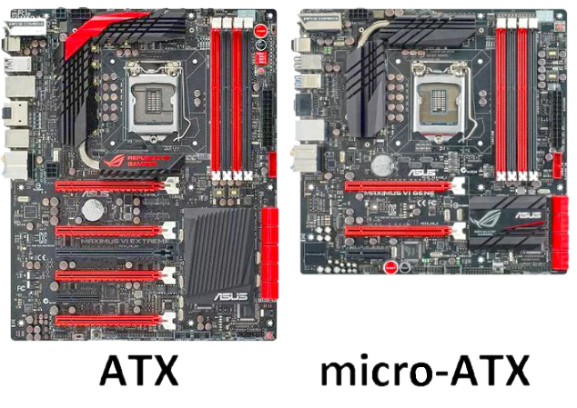

Форм-факторы системных плат для офисных и игровых ПК
ATX
Данный формат МП является наиболее востребованным для построения стационарных компьютеров любой конфигурации, начиная от офисного варианта, заканчивая мощной игровой станцией. Платы формата ATX имеют стандартные размеры 30,5х24,2 см.,
что позволяет производителям без труда наделять их всем необходимым функционалом и полноценной комплектной базой – слотами, портами, интерфейсными разъемами, усиленными цепями питания и т.д.К важной конструктивной особенности данного типоразмера МП нужно отнести то, что они совместимы лишь с корпусами системных блоков того же стандарта ATX.
С одной стороны, это, казалось бы, минусом, но с другой- сборка компьютеров с их применением может сэкономить пользователю денежные средства из выделенного им бюджета.Во-первых, компьютер, собранный на их базе менее требователен к системе охлаждения,
потому как компонентам его аппаратной начинки не приходится ютиться в маленьком корпусе, а значит они имеют хорошую вентиляцию без применения дорогостоящих систем охлаждения.
Во-вторых, сегмент корпусов, совместимых с материнскими платами форм-фактора ATX, более велик по сравнению с прочими типоразмерами. Поэтому, собирая компьютер, у пользователя не возникнет затруднения с выбором корпуса будущего ПК ни по финансовой стороне вопроса, ни по выбору модели.
MicroATX(mATX)
Данный типоразмер материнских плат является урезанной версией стандарта ATX. Это касается как размеров, так и комплектной базы. Размеры МП этого стандарта составляют 24,4х24,4 cм. Они полностью совместимы с корпусами предыдущего формата, но не наоборот.
Зачастую платы MicroATX могут быть схожи по конфигурации со своими собратьями стандарта ATX. То есть, они могут оснащаться тем же чипсетом, но с меньшим количеством слотов PCI, предназначенных для установки различных карт расширения.
Кроме этого, не редко МП типоразмера MicroATX оснащаются встроенным графическим ядром, а схожие по конфигурации ATX нет. Отсюда следует, что системные платы этого форм-фактора не нацелены на построение игровых систем, а в большинстве случаев, ориентированы лишь для создания компьютеров офисного назначения.
FlexATX
Форм-фактор FlexATX является следующей эволюцией в сторону уменьшения материнских плат и удешевления компьютеров, собираемых на их базе. МП данного формата имеют размер 22,9х19,1 см и предназначены только лишь для офисных ПК.
Они, как и их предшественницы, полностью совместимы с корпусами системных блоков формата ATX и с их системой питания.
Важной отличительной особенностью МП этого стандарта, позволяющей достигать им не высокой продажной стоимости, это их более скудная комплектная база.
В некоторых случаях они даже не комплектуются слотами расширения, а пользователю приходится довольствоваться только лишь портами USB и IEEE-1394/FireWire.
Ниже на видео рассмотрены основные отличия МП семейства ATX и основные моменты, на которые нужно обратить внимание, собирая новый ПК.